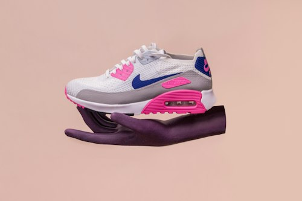
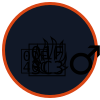

Nike Air Max 90 (White/Pink/Blue) - Sepatu Lari Wanita
Rp 2.400.000
Rp 1.950.000
Diskon Spesial

Koleksi Galeri Sepatu Olahraga Lari Terbaik Pelari Siput

Kategori: Sepatu Lari / Lifestyle
Bahan: Kulit Sintetis Premium & Mesh
Berat: 310 gram
Menggabungkan gaya klasik tahun 90-an dengan kenyamanan olahraga modern. Dilengkapi dengan unit bantalan udara (Air Max) transparan berwarna merah muda di bagian tumit untuk meredam benturan dengan sempurna saat Anda berlari.